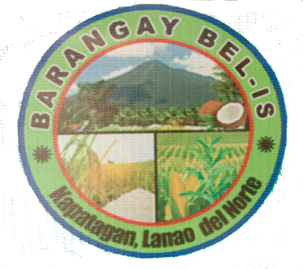
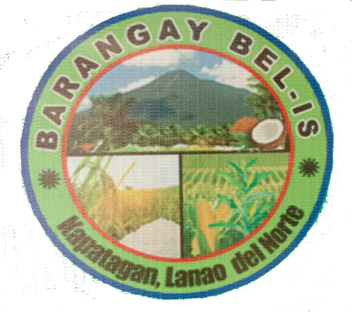
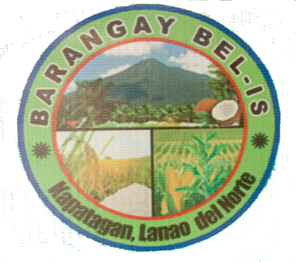
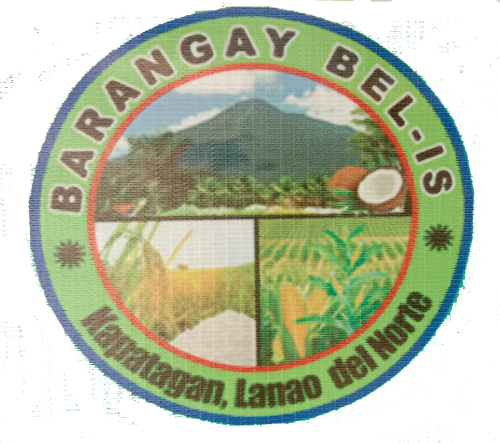
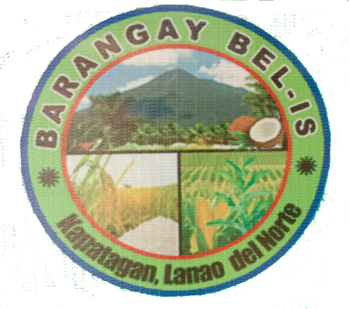

Municipality of
Kapatagan
üè† Home
ℹ️ About
üéØ Vision and Mission
üë• Municipal Official
üè¢ National Line Agencies
üèòÔ∏è Barangay Directory
üèõÔ∏è Cultural Property
üåÑ Tourism
üìû Contact Us
Barangay Directory

×

 



 
